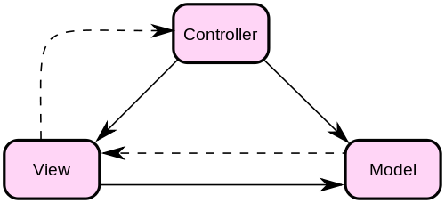
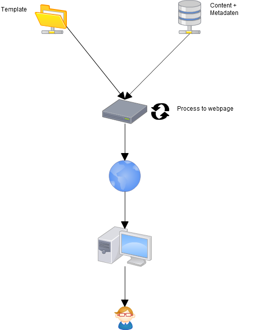

Bjoern Zapadlo
Konstanz
Jahre
Team Manager / Lead Developer HolidayCheck AG
Informatik Studium 1999 - 2002
3 Agenturen in Stuttgart
HolidayCheck International Websites / new Framework
Neckermann / Thomas Cook
Dozent an der SAE, Dualen Hochschule Stuttgart, Hochschule Furtwangen
PHP, Java, Scala, Javascript, CSS, Html,MySQL, MongoDB, Elasticsearch, ...
Seit über 15 Jahren im Web unterwegs
bjoern.zapadlo@gmail.com
http://www.zapadlo.de
@BjoeZap
https://www.xing.com/profile/Bjoern_Zapadlo
http://de.linkedin.com/pub/bjoern-zapadlo/36/889/1a5
Facebook
Google+
Größtes deutsches Meinungsportal für Reise und Urlaub
Vermittlung von Reisen
Sitz in der Schweiz, direkt am Bodensee
Börsennotiert über Tomorrow Focus AG
Existiert seit 1999
Ausgründungen in mehreren europäischen Ländern
Über 300 Mitarbeiter
Was sind Template Engines und wozu werden sie eingesetzt, Voraussetzungen, Handbuch und Links, jeweils => Twig, Smarty, Fluid, Jeweils ein Beispiel
smarty-Sytax, Sprachkonstrukte (Variablen, Schleifen, Kontrollstrukturen), $smarty, includes, Variablen-Modifier, Funktionen (html_*, include, literal, etc.)
Templates (der englische Begriff für Schablonen), sind Vorlagen, die mit Inhalt gefüllt werden können
Eine Vorlage (englisch template) dient in der Datenverarbeitung zur Erstellung von Dokumenten oder Dokumentteilen. Sie stellt eine Art „Gerüst“ dar, die einen Teil des Inhaltes oder der Gestaltung des Dokumentes vorgibt. Durch Einsetzen der fehlenden Bestandteile wird die Vorlage zu einem vollständigen Dokument ergänzt. Sie werden hauptsächlich für DTP- oder Textverarbeitungsprogramme und Webseiten genutzt.
Eine Template-Engine (von engl. Vorlage und Maschine) ist eine Software, die eine Datei (das Template) verarbeitet, und bestimmte Platzhalter darin mit jeweils aktuellen Inhalten füllt. Die Bezeichnungen Templateklasse und Templatesystem werden oft als Synonym für eine Template-Engine verwendet.
Klassisch in einer PHP-Applikation repäsentiert eine PHP-Datei eine Html-Seite
Mit Template-Engines erfolgt eine Trennung in eine Datei, die die PHP Logik enthält und ein Template, welches das Html + Template-Code enthält.
Der englischsprachige Begriff model view controller (MVC, englisch für Modell-Präsentation-Steuerung) ist ein Muster zur Strukturierung von Software-Entwicklung in die drei Einheiten Datenmodell (engl. model), Präsentation (engl. view) und Programmsteuerung (engl. controller). Manche Autoren stufen es als Architekturmuster ein, andere als Entwurfsmuster. Ziel des Musters ist ein flexibler Programmentwurf, der eine spätere Änderung oder Erweiterung erleichtert und eine Wiederverwendbarkeit der einzelnen Komponenten ermöglicht. Es ist dann zum Beispiel möglich, eine Anwendung zu schreiben, die das gleiche Modell benutzt, aber einerseits eine Windows- oder Linux-Oberfläche realisiert, andererseits aber auch eine Weboberfläche beinhaltet. Beides basiert auf dem gleichen Modell, nur Controller und View müssen dabei jeweils neu konzipiert werden.

Das Modell enthält die darzustellenden Daten und gegebenenfalls (abhängig von der Implementierung des MVC-Patterns) auch die Geschäftslogik. Es ist von Präsentation und Steuerung unabhängig. Die Bekanntgabe von Änderungen an relevanten Daten im Modell geschieht nach dem Entwurfsmuster „Beobachter“. Das Modell ist das zu beobachtende Subjekt, auch Publisher, also „Veröffentlicher“, genannt
Die Steuerung verwaltet eine oder mehrere Präsentationen, nimmt von ihnen Benutzeraktionen entgegen, wertet diese aus und agiert entsprechend. Zu jeder Präsentation existiert eine eigene Steuerung. Die Steuerung sorgt dafür, dass Benutzeraktionen wirksam werden, z.B. durch Änderung der Präsentation (z.B. Verschieben des Fensters) oder durch Weiterleiten an das Modell (z.B. Übernahme von Eingabedaten oder Auslösen von Verarbeitungen). Als es noch keine Objektorientierung gab, bestand ein Modell nur aus Daten, und die Steuerung hat die Daten oft direkt aktualisiert. In einer objektorientierten Umgebung ist es dagegen besser, wenn das Modell die Geschäftsobjekte enthält und die Steuerung sich darauf beschränkt, Benutzereingaben (Daten und Methodenaufrufe) weiterzuleiten, von der Präsentation an das Modell. Die Steuerung enthält weiterhin Mechanismen, um die Benutzerinteraktionen der Präsentation einzuschränken. Die Steuerung kann in manchen Implementierungen ebenfalls zu einem „Beobachter“ des Modells werden, um bei Änderungen der Daten den View direkt zu manipulieren.
Die Präsentationsschicht ist für die Darstellung der benötigten Daten aus dem Modell und die Entgegennahme von Benutzerinteraktionen zuständig. Sie kennt sowohl ihre Steuerung als auch das Modell, dessen Daten sie präsentiert, ist aber nicht für die Weiterverarbeitung der vom Benutzer übergebenen Daten zuständig. Im Regelfall wird die Präsentation über Änderungen von Daten im Modell mithilfe des Entwurfsmusters „Beobachter“ unterrichtet und kann daraufhin die aktualisierten Daten abrufen. Die Präsentation verwendet oft das Entwurfsmuster „Kompositum“.
Cross-Site-Scripting (XSS; deutsch Websiteübergreifendes Scripting) bezeichnet das Ausnutzen einer Computersicherheitslücke in Webanwendungen, indem Informationen aus einem Kontext, in dem sie nicht vertrauenswürdig sind, in einen anderen Kontext eingefügt werden, in dem sie als vertrauenswürdig eingestuft werden. Aus diesem vertrauenswürdigen Kontext kann dann ein Angriff gestartet werden.
Ziel ist es meist, an sensible Daten des Benutzers zu gelangen, um beispielsweise seine Benutzerkonten zu übernehmen (Identitätsdiebstahl).
Cross-Site-Scripting ist eine Art der HTML Injection. Cross-Site-Scripting tritt dann auf, wenn eine Webanwendung Daten annimmt, die von einem Nutzer stammen, und diese Daten dann an einen Browser weitersendet, ohne den Inhalt zu überprüfen. Damit ist es einem Angreifer möglich, auch Skripte indirekt an den Browser des Opfers zu senden und damit Schadcode auf der Seite des Clients auszuführen.
Übersicht: http://en.wikipedia.org/wiki/Comparison_of_web_template_engines
Smarty ist eine freie (unter der LGPL veröffentlichte) Template Engine, die als PHP-Bibliothek vorliegt. Sie wurde mit dem Ziel entworfen, bei der Entwicklung von Webapplikationen die Trennung von Code und Ausgabe zu ermöglichen. Die Ausgabe erfolgt meist in HTML, möglich ist jedes textbasierte Dateiformat, zum Beispiel auch XML.
Smarty benötigt einen Webserver mit PHP >=4.0.6. bzw. 5.2.0 (Smarty 3.x)
Download und entzippen nach libs
<?php
require('libs/Smarty.class.php');
$smarty = new Smarty();
$smarty->display('cv.tpl.html');
?>
Kommentare werden von Asterisks umschlossen, und mit Trennzeichen umgeben. Beispiel: {* das ist ein Kommentar *} Smarty-Kommentare werden in der Ausgabe nicht dargestellt und vor allem dazu verwendet, die Templates verständlicher aufzubauen. Smarty Kommentare werden sind in der engültigen Ausgabe NICHT dargestellt. (im Gegensatz zu <!-- HTML Kommentaren -->). Sie sind nützlich um in den Templates interne Anmerkungen zu hinterlassen.
<body>
{* Dies ist ein einzeiliger Kommentar *}
{* dies ist ein mehrzeiliger
Kommentar, der nicht zum
Browser gesandt wird.
*}
</body>
Templatevariablennamen beginnen mit einem $dollar-Zeichen. Sie können Ziffer, Buchstaben und Unterstriche ('_') enthalten, sehr ähnlich den Variablen in PHP. Numerische Arrayindizes können referenziert werden und auch Nichtnumerische. Zugriff auf Objekteigenschaften und -methoden ist auch möglich.
{$foo} <-- Zeigt einfache Variable an (kein Array oder Objekt)
{$foo[4]} <-- Zeigt 5. Element von einem Array an, deren Schlussel bei 0 beginnen
{$foo.bar} <-- Zeigt das Element zum Schlüssel "bar" des Arrays an (wie PHPs $foo['bar'])
{$foo.$bar} <-- Zeigt das Element eines variablen Schlüssels an (wie PHPs $foo[$bar])
{$foo->bar} <-- Zeigt eine Eigenschaft "bar" des Objekts $foo an
{$foo->bar()} <-- Zeigt den Rückgabewert der Objectmethode "bar" an
<?php
require('libs/Smarty.class.php');
$smarty = new Smarty();
$smarty->assign('name', 'george smith');
$smarty->assign('address', '45th & Harris');
$smarty->display('cv.tpl.html');
?>
Jedes Smarty-Tag gibt entweder eine Variable aus oder ruft eine Funktion auf. Funktionen werden aufgerufen indem der Funktionsname und die Parameter mit Trennzeichen umschlossen werden. Beispiel: {funcname attr1="val" attr2="val"}.
{mySimpleFunction}
{html_select_date display_days=true param2="hallo welt"}
Variablen-Modifikatoren können auf alle Variablen angewendet werden, um deren Inhalt zu verändern. Dazu hängen sie einfach ein | (Pipe-Zeichen) und den Modifikatornamen an die entsprechende Variable an. Ein Modifikator über Parameter in seiner Arbeitsweise beinflusst werden. Diese Parameter werden dem Modifikatorname angehängt und mit : getrennt.
{* Modifikator auf eine Variable anwenden *}
{$titel|upper}
{* Modifikator mit Parametern *}
{$title|truncate:40:"..."}
{* Modifikator auf Funktionsparameter anwenden *}
{html_table loop=$myvar|upper}
{* mit Parametern *}
{html_table loop=$myvar|truncate:40:"..."}
{* formatierung einer Zeichenkette *}
{"foobar"|upper}
{* mit date_format das aktuelle Datum formatieren *}
{"now"|date_format:"%Y/%m/%d"}
{if}-Statements in Smarty erlauben die selbe Flexibilität wie in PHP, bis auf ein paar Erweiterungen für die Template-Engine. Jedes {if} muss mit einem {/if} kombiniert sein. {else} und {elseif} sind ebenfalls erlaubt. Alle PHP Vergleichsoperatoren und Funktionen, wie ||, or, &&, and, is_array(), etc. sind erlaubt.
{if $name == "Fred"} {* ein Beispiel mit == und 'eq' (gleich) *}
Willkommen der Herr.
{elseif $name eq "Wilma"}
Willkommen die Dame.
{else}
Willkommen, was auch immer Du sein magst.
{/if}
{if ( $anzahl < 0 or $anzahl > 1000 ) and $menge >= #minMengeAmt#} {* Klammern sind erlaubt *}
...
{/if}
{if count($var) gt 0} {* einbetten von php Funktionsaufrufen ('gt' steht für 'grösser als') *}
...
{/if}
Template-{sections} werden verwendet, um durch Arrays zu iterieren (ähnlich wie {foreach}). Jedes section-Tag muss mit einem /section-Tag kombiniert werden. name und loop sind erforderliche Parameter. Der Name der 'section' kann frei gewählt werden, muss jedoch aus Buchstaben, Zahlen oder Unterstrichen bestehen. {sections} können verschachtelt werden
<?php
$data = array(1000,1001,1002);
$smarty->assign('custid',$data);
?>
{* dieses Beispiel gibt alle Werte des $KundenId Arrays aus *}
{section name=kunde loop=$custid}
id: {$KundenId[kunde]}
{/section}
{* alle Werte in umgekehrter Reihenfolge ausgeben: *}
{section name=kunde loop=$custid step=-1}
id: {$KundenId[kunde]}
{/section}
Die foreach Schleife ist eine Alternative zu section. foreach wird verwendet, um ein assoziatives Array zu durchlaufen. Die Syntax von foreach-Schleifen ist viel einfacher als die von section. {foreach} Tags müssen mit {/foreach} tags kombiniert werden. Erforderliche Parameter sind: from und item.
<?php
$data = array(1000,1001,1002);
$smarty->assign('custid',$data);
?>
{* dieses Beispiel gibt alle Werte aus dem $KundenId Array aus *}
{foreach from=$custid item=aktuelle_id}
id: {$aktuelle_id}
{/foreach}
Foreach-Loops haben auch eigene Variablen welche die Foreach Eigenschaften enthalten. Diese werden wie folgt ausgewiesen: {$smarty.foreach.foreachname.varname}. foreachname ist der Name der als name Attribut von Foreach übergeben wurden.
iteration: gibt die aktuelle iteration aus, beginnend bei 1
first ist TRUE wenn die aktuelle Iteration die erste ist
last ist TRUE wenn die aktuelle Iteration die letzte ist
total gibt die Anzahl Iterationen des Foreach Loops aus und kann in- oder nach- Foreach Blöcken verwendet werden.
{include}-Tags werden verwendet, um andere Templates in das aktuelle Template einzubinden. Alle Variablen des aktuellen Templates sind auch im eingebundenen Template verfügbar. Das {include}-Tag muss ein 'file' Attribut mit dem Pfad zum einzubindenden Template enthalten.
<html>
<head>
<title>{$title}</title>
</head>
<body>
{include file='page_header.tpl'}
{* hier kommt der body des Templates *}
{include file="$tpl_name.tpl"} <-- $tpl_name wird durch eine Wert ersetzt
{include file='page_footer.tpl'}
</body>
</html>
<?php
include('Smarty.class.php');
$smarty = new Smarty;
$smarty->assign('name', 'george smith');
$smarty->assign('address', '45th & Harris');
$smarty->display('index.tpl');
?>
<html>
<head>
<title>Info</title>
</head>
<body>
<pre>
User Information:
Name: {$name}
Address: {$address}
</pre>
</body>
</html>
<html>
<head>
<title>Info</title>
</head>
<body>
<pre>
User Information:
Name: george smith
Address: 45th & Harris
</pre>
</body>
</html>
Twig ist eine moderne Template Engine von den Machern des Symfony Frameworks und daher auch Teil dieses
Smarty benötigt einen Webserver mit PHP 5.2.4
Download und entzippen nach lib/Twig
<?php
require_once 'lib/Twig/Autoloader.php';
Twig_Autoloader::register();
$loader = new Twig_Loader_Filesystem('.');
$twig = new Twig_Environment($loader, array());
echo $twig->render('index.tpl.html', array('bla' => 'blubb'));
?>
{# note: disabled template because we no longer use this
{% for user in users %}
...
{% endfor %}
#}
{{ foo.bar }}
{{ foo['bar'] }}
{% set foo = 'foo' %}
{% set foo = [1, 2] %}
{% set foo = {'foo': 'bar'} %}
echo $twig->render('index.tpl.html', array('bla' => 'blubb', 'blubb' => 'bla'));
{{ name|striptags|upper }}
{{ list|join(', ') }}
{{ date() }}
{% for i in range(0, 3) %}
{{ i }},
{% endfor %}
{% if kenny.sick %}
Kenny is sick.
{% elseif kenny.dead %}
You killed Kenny! You bastard!!!
{% else %}
Kenny looks okay --- so far
{% endif %}
<h1>Members</h1>
<ul>
{% for user in users %}
<li>{{ user.username|e }}</li>
{% endfor %}
</ul>
{% include 'sidebar.html' %}
{% for box in boxes %}
{% include "render_box.html" %}
{% endfor %}
<!DOCTYPE html>
<html>
<head>
{% block head %}
<link rel="stylesheet" href="style.css" />
<title>{% block title %}{% endblock %} - My Webpage</title>
{% endblock %}
</head>
<body>
<div id="content">{% block content %}{% endblock %}</div>
<div id="footer">
{% block footer %}© Copyright 2011 by <a href="http://domain.invalid/">you</a>.{% endblock %}
</div>
</body>
</html>
{% extends "base.html" %}
{% block title %}Index{% endblock %}
{% block head %}
{{ parent() }}
<style type="text/css">
.important { color: #336699; }
</style>
{% endblock %}
{% block content %}
<h1>Index</h1>
<p class="important">
Welcome to my awesome homepage.
</p>
{% endblock %}
Die Ausgabe von Inhalten im Frontend wird in erster Linie über die Metasprache TypoScript gesteuert. Genau genommen ist TypoScript eine Konfigurationssprache: Was in TypoScript definiert ist, wird in ein systemweites PHP-Array geparst. Dieses wiederum steuert, welche PHP-Funktionen beim Aufruf der Seite ausgeführt werden. Damit können Eigenschaften und Erweiterungen mit wenigen Handgriffen global für die gesamte Website verwaltet werden. TypoScript ist (bezogen auf die Syntax) objektorientiert.
page = PAGE
page.10 = TEXT
page.10.value = Hello, world!
page.10.wrap = |
TypoScript + Extension in Typo3
<div class="box box-{boxColor}">
<h3>{boxHeader}</h3>
<div class="contains">
{boxContent}
</div>
</div>
Ein Informationssystem, dass Inhalte organisiert und verwaltet
So gesehen sind auch Office Produkte, Email-Clients und z.B. Adserver (OpenX) Systeme, um Inhalte zu Pflegen
Ein Content-Management-System (kurz: CMS, deutsch „Inhaltsverwaltungssystem“) ist eine Software zur gemeinschaftlichen Erstellung, Bearbeitung und Organisation von Inhalten (Content) zumeist in Webseiten, aber auch in anderen Medienformen. Diese können aus Text- und Multimedia-Dokumenten bestehen. Ein Autor mit Zugriffsrechten kann ein solches System in vielen Fällen mit wenig Programmier- oder HTML-Kenntnissen bedienen, da die Mehrzahl der Systeme über eine grafische Benutzeroberfläche verfügen.
Was sind die Grundsätze eines CMS?
Im Gegensatz zu statischen Webseiten werden die Inhalte (Texte, Bilder, Videoclips etc.) sowie die Formatvorlagen (Templates) in einem CMS separat gespeichert. Wenn eine entsprechende Webseite aufgerufen wird, wird diese dynamisch generiert, indem in ein entsprechendes Template die verschiedenen Inhalte geladen und angeordnet werden.
Medienneuttralität ist hier ebenfalls ein Grundsatz, so dass Ausgabe auch als PDF, RSS, ... möglich sein soll.
In Content Management Systemen werden die einzelnen von den Autoren gelieferten Inhalte mit Metadaten versehen und in einer Komponenten-Datenbank (content component database) abgelegt. Redakteure können nun aus diesen einzelnen Komponenten (Texte, Bilder, ...) Artikel zusammensetzen, die dann publiziert werden können. Oft wird die auch Asset-Management genannt.
Ein CMS bietet Mechanismen, die eine Definition und Kontrolle des Workflows (Ablauf der Arbeitsschritte) ermöglichen. So werden die von den Redakteuren zusammengesetzten Artikel vom Chefredakteur überprüft, bei Bedarf redigiert und von diesem für die Online-Publikation freigegeben. Die auf der Webseite publizierten Artikel bleiben für eine bestimmte Zeit online und werden nach Ablauf dieser Zeit im Archiv abgelegt.
Kommerziell, open source, spezielle CMS (eingeschränkt auf bestimmte Typen)
Volldynamische Systeme erzeugen angeforderte Dokumente bei jedem Aufruf dynamisch neu, das heißt, Vorlagen und Inhalte werden erst bei Abruf interpretiert bzw. zusammengeführt und ausgegeben. Vorteile: Die Seite ist immer „aktuell“; eine Personalisierung für den Surfer ist in der Regel sehr einfach oder sogar bereits vorhanden. Nachteile: Die Neuberechnung bei jeder Seitenauslieferung kann unter hoher Last (zum Beispiel hoher Besucherandrang) zu einer verzögerten Auslieferung der Seiten oder bei mangelhafter Ausstattung/Konfiguration an Rechenkapazität im Verhältnis zur Anzahl gleichzeitig bedienter Nutzer zur Serverüberlastung und im Extremfall zum Systemstillstand führen. Eine Maßnahme zur Verringerung der Last ist Caching.
Software läuft im Internet auf dem Webserver (z.B. in PHP). Die meisten CMS sind online CMS.
Vorteile sind hier, dass man von überall editieren kann.
Nachteilig wirken sich kosten für Webspace / Infrastruktur und eine evtl. Anfälligkeit für Angriffe aus.
Statische Systeme erzeugen die einzelnen Webseiten aus den Vorlagen und Inhalten als statisch abgelegte Datei im Dateisystem oder ggf. in einer Datenbank. Als Endprodukt erhält man somit Dokumente, die keinerlei Interpretation seitens einer Servertechnologie wie z. B. ASP, JSP oder PHP mehr benötigen und daher direkt durch den Webserver ausgegeben werden können, was sich in der Ausgabegeschwindigkeit zeigt. Dies hat den Vorteil, dass selbst einfachere Webhosting-Produkte als Basis ausreichend sein können. Nachteil kann sein, dass möglicherweise gewachsene Anforderungen durch größere Komplexität in Verbindung mit dem Wunsch nach sehr kurzen Aktualisierungszyklen ein solches System als ungeeignet entpuppen. Rein statische Systeme bilden den historischen Ursprung der CMS und werden jedoch – in dieser Ursprungsform – nur noch selten eingesetzt.
Software generiert z.B. im Firmennetzwerk statische Html-Dateien, die bei Bedarf auf den Webserver hochgeladen werden.
Vorteilig sind hier die geringen Anforderungen an den Webserver, negativ die fehlenden Interaktionsmöglichkeiten und Probleme mit der Aktualisierung (wann und nicht von überall möglich).
Hybride Systeme kombinieren die Vorteile der statischen und der volldynamischen Seitenerzeugung. Lediglich die Inhalte, die dynamisch aus einer Datenbank generiert werden müssen (z. B. News, Suchabfragen, personalisierte Inhalte oder Shopdaten), werden zur Laufzeit aus der Datenbank ausgelesen. Alle anderen Inhalte, die nicht laufend Änderungen unterzogen werden (wie etwa das Seitengerüst, die Navigation, aber auch bestimmte Texte und Bilder), liegen statisch vor.
Halbstatische Systeme generieren den Inhalt so, dass dieser statisch ist, aber gleichzeitig auch dynamisch, d. h., es werden alle Daten direkt in statisch generierten Dateien gespeichert, die dann bei Abruf sofort ausgegeben werden. Die dynamischen Inhalte werden dann generiert, wenn ein Code in der Programmsprache in die Datei eingebunden wird oder einzelne Datensätze geändert beziehungsweise neu angelegt werden.
Enterprise-Content-Management (ECM) umfasst die Methoden, Techniken und Werkzeuge zur Erfassung, Verwaltung, Speicherung, Bewahrung und Bereitstellung von Content und Dokumenten zur Unterstützung organisatorischer Prozesse im Unternehmen. ECM führt strukturierte, schwach strukturierte und unstrukturierte Informationen zusammen.
Die Bezeichnung Enterprise-Content-Management ist ein modernes Kunstwort, das Produkte, Lösungen, einen Markt und eine Branche beschreiben soll.
Enterprise-Content-Management geht vom Ansatz aus, alle Informationen eines Unternehmens auf einer einheitlichen Plattform zur Nutzung intern, im Partnerverbund und extern bereitzustellen („Unified-Federated-Repository“, Data-/ Document-/ Content-Warehouse). ECM umfasst herkömmliche Informationstechniken wie Dokumentenmanagement, Knowledge Management (Wissensmanagement), Workflow-Management, Archivierung, etc. und integriert die Host- und Client/Server-Welt mit Portal- und anderen Internet-Techniken. Ziel von ECM ist, Daten- und Dokumentenredundanz zu vermeiden (jede Information existiert nur einmal), den Zugriff einheitlich zu regeln, unabhängig von Quelle und Nutzung beliebige Informationen bereitzustellen und als Dienst allen Anwendungen gleichförmig zur Verfügung zu stellen
Open Source bzw. quelloffen sind Werke, die ihren Quelltext offenlegen und einige weitere Bedingungen erfüllen. Im engeren Sinne handelt es sich dabei um Software, die unter einer von der Open Source Initiative (OSI) anerkannten Lizenz steht.
Open-Source-Software (OSS) ist nahezu deckungsgleich mit Freier Software. Der Unterschied liegt in den vertretenen Werten: Für Freie Software ist die Nutzerkontrolle über die Software sowie die Kooperation mit Anderen ein wichtiges soziales, politisches und ethisches Anliegen. Bei der OSI ist der vertretene Wert primär der praktische Nutzen und die Entwicklungsmethode.
Was gehört alles zu einem CMS?

SQL, NoSQL, Speicherung von Daten
Kombinieren von Daten und Layout
Interne Verlinkung
Themes, Widgets, Layouts, Partials, Pages, ...
RSS, andere Blogs
Installation, Durchclicken, Plugins, Templates, Blog vs. CMS, Menüs, Widgets... Anpassung Template, Installation Plugin, Artikel anlegen, Seiten anlegen, Templates installieren, Statistik, Mehrsprachigkeit, meist installiertes system, vorteile, nachteile, geschichte, import export, preview Interessante Seiten (Hilfe, Plugins, ...), Case Studies, Workflow mit Hilfe der Rollen
Voraussetzungen, Installation, Durchclicken, Plugins, Themes, Layouts, Module, Templates, Handbuch, Anpassung Template, Installation Plugin, Artikel anlegen, Seiten anlegen, Templates installieren, Staging, Mehrsprachigkeit Interessante Seiten (Hilfe, Plugins, ...), Case Studies
Voraussetzungen, Installation, Durchclicken, Plugins, Themes, Layouts, Module, Templates, Handbuch, Anpassung Template, Installation Plugin, Artikel anlegen, Seiten anlegen, Templates installieren, Staging, Mehrsprachigkeit Interessante Seiten (Hilfe, Plugins, ...), Case Studies
Voraussetzungen, Installation, Durchclicken, Plugins, Themes, Layouts, Module, Templates, Handbuch, Anpassung Template, Installation Plugin, Artikel anlegen, Seiten anlegen, Templates installieren, Staging, Mehrsprachigkeit Interessante Seiten (Hilfe, Plugins, ...), Case Studies
Voraussetzungen, Installation, Durchclicken, Plugins, Templates, Menüs, Widgets... Anpassung Template, Installation Plugin, Artikel anlegen, Seiten anlegen, Templates installieren, Mehrsprachigkeit Interessante Seiten (Hilfe, Plugins, ...), Case Studies
Zielsetzung, ..., Vorschlag eigene Bewerbungsseite mit CV, link zu Projekten, ...
Made with reveal.js(with Html and JS)